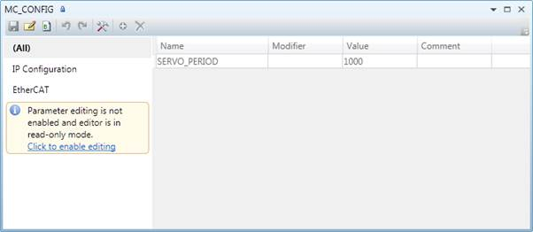
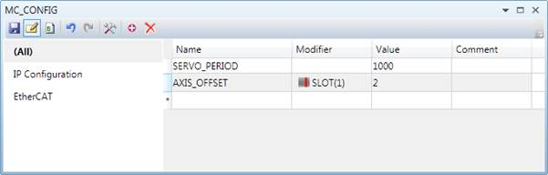
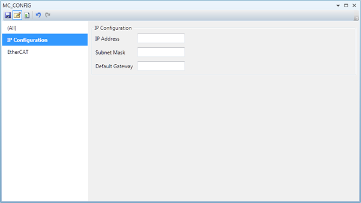
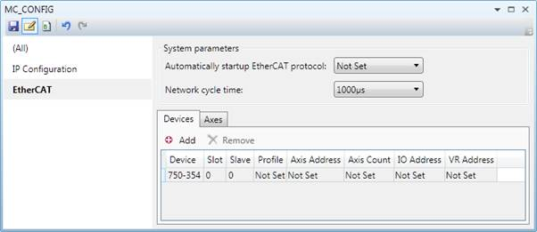

The MC_CONFIG editor is designed to allow assisted editing of the parameter values which need to be set when the controller is restarted. The editor is started by double clicking on the MC_CONFIG file in the controller tree, or by creating a new MC_CONFIG file if one does not already exist. Initially the editor starts up in read-only mode so that values are not accidentally changed. Clicking on the link in the warning notice puts it into editing mode.

The parameters are divided into three groups, All, IP Configuration and EtherCAT. Selecting a group on the left of the dialog will display the parameters in that group on the right-hand side.

To add a parameter, click on the name column in the last row (marked with a * on the left hand side). The required parameter (from the supported parameters ) is selected from a drop-down list. A modifier (if required), value and comment can then be added.

This allows the user to set up various IP (Ethernet) parameters.
Normally it is best to leave the settings as set in the controller flash memory. Setting them in the MC_CONFIG file may be useful when configuring stand-alone systems but can cause unforeseen communications problems if not used wisely.
Incorrect settings here may make it impossible to communicate with the controller.

This allows the user to set up certain parameters for communication with EtherCAT drives basic system parameters such as the start-up state of EtherCAT protocol and the network cycle time apply to the whole EtherCAT network, other parameters affect how the system interfaces with a device or configures an axis.
Selecting text mode by clicking on the icon in the toolbar changes to using the Trio BASIC program editor to edit the MC_CONFIG file.